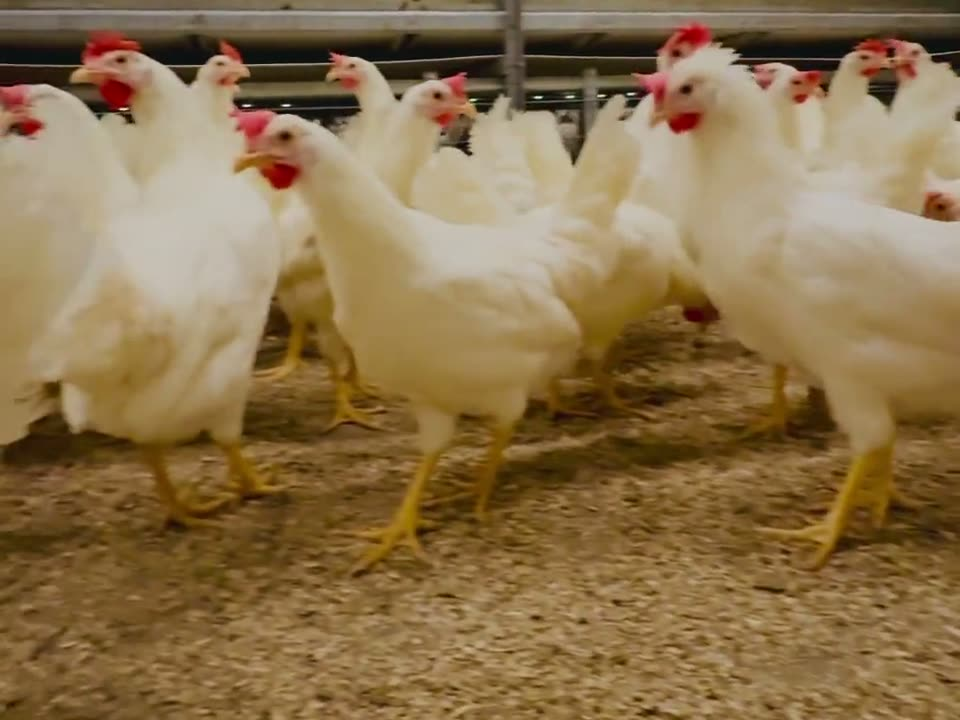

Ein gard med røter. Sidan 1860.
Lars Hareide var klokkaren i bygda. Difor Klokkargarden.
Klokkargarden har namnet sitt etter Lars Hareide, klokkaren i bygda, som fekk skøyte på garden i 1860. Lars og kona Hansine tok til seg fire fosterborn — mellom dei Elias, som tok over i 1900 og bygde nytt hus på garden. Frå Elias har garden gått frå hand til hand i beint nedstigande linje: sonen Ingolf — «Klokkar-Ingolf» — tok over i 1927, dottera hans Åsbjørg og mannen Håkon i 1959, sonen deira Hallgeir og kona Marianne i 1983 — og sidan 2017 er Ingar og Elisabeth forvaltarar av garden.
I dag driv vi garden vidare med same haldning som dei før oss: godt handverk, godt dyrehald og respekt for det som er ekte. Det du finn hos oss, kjem herifrå.

Huset med torvtak
Gardstunet slik det såg ut kring 1905: familien samla framfor hovudhuset med torvtak — huset Elias tok over i 1900. Same tun, same jord, same slekt.

Hønene og drifta
I dag er Klokkargarden eit moderne hønseri: 15 167 høner som går fritt, både høgt og lågt, med eigenutvikla fôr og KSL-godkjend dyrevelferdsprogram. Egga går rett frå reiret til den døgnopne gardsbutikken ved vegen. Drifta er moderne. Haldninga er den same som i 1860.
— frå familiearkivet —